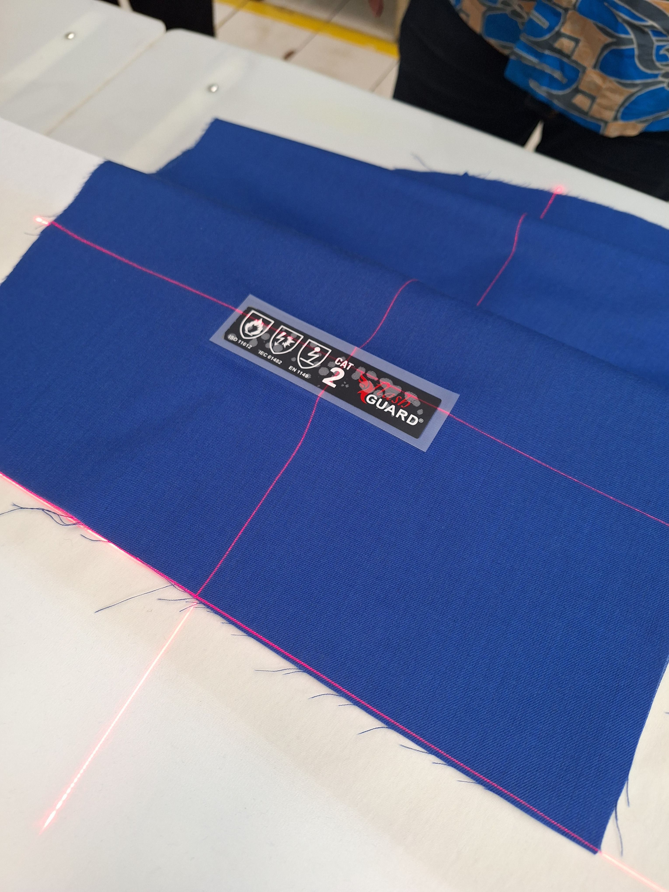

Overview
Designed and developed multiple laser-based positioning systems to assist sewing operators in achieving consistent material alignment during garment production. The solution projected reference lines directly onto workstations, reducing manual measurement and improving positioning accuracy before sewing operations.
Project Images

Laser guidance fixture installed on a workstation.
.jpg)
Operator using the projected reference line during setup.
.jpg)
Multiple installation setups for different production processes.
Challenge
- Operators relied on manual visual alignment, which caused inconsistencies and longer setup times.
- Quality variations sometimes occurred due to alignment errors during preparation.
- A simple and reliable guidance system was needed without modifying existing sewing machines.
Solution
Laser Guidance Fixture
Developed a laser positioning system that projected alignment guides onto the sewing workspace.Process-Specific Customization
Each laser fixture was customized according to the production process and workstation layout.Easy Installation
The solution was designed for easy installation on existing production lines with minimal disruption.Result
- Improved positioning consistency during sewing preparation.
- Reduced manual alignment and measurement time.
- Increased operator productivity through faster setup.
- Improved product quality by minimizing alignment variations.
- Successfully deployed multiple laser guidance systems across different production processes.
- Delivered a low-cost automation solution without requiring machine replacement.
Conclusion
This project demonstrated that small automation improvements can generate significant operational benefits. Rather than replacing existing equipment, simple laser guidance systems enhanced operator performance, improved process consistency, and reduced preparation time.